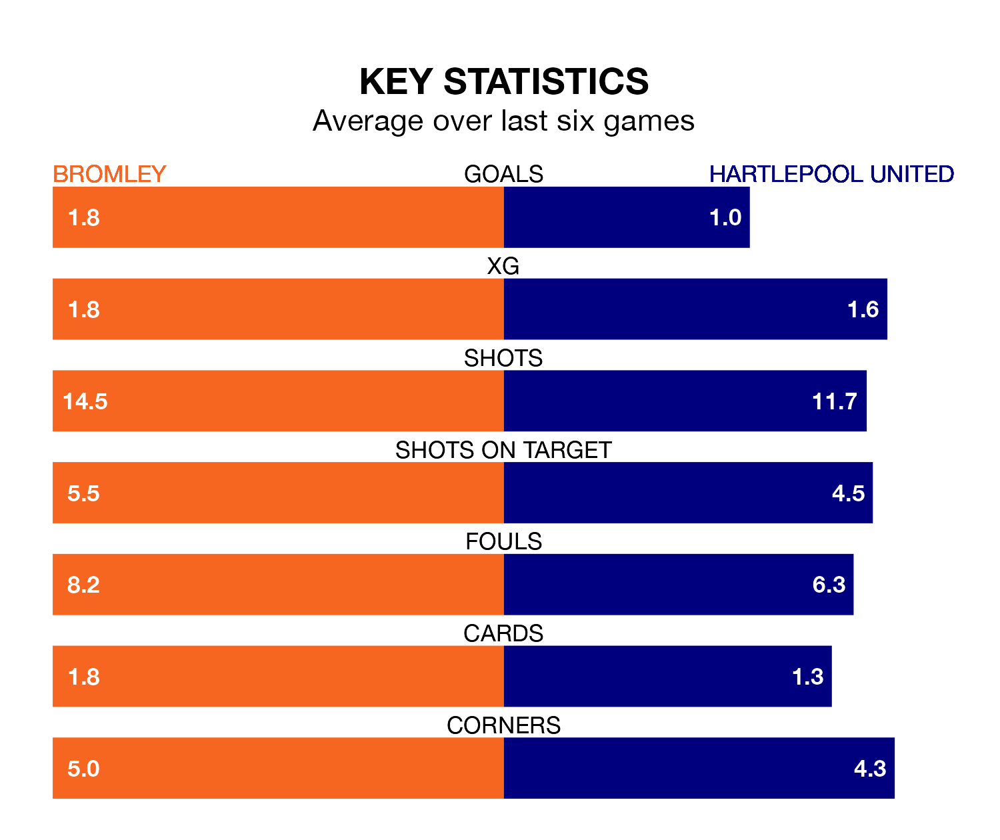

Bromley host Hartlepool United in Saturday's match at Hayes Lane looking to bounce back from defeat last time out in National League.
The Ravens, who sit second in the league after 31 games, fell to a 1-0 away defeat to Fylde on January 27.
They face a Hartlepool side who picked up a win in their last match, a 2-1 victory against York City, and who sit 13th in the table.
With 52 goals in 31 games so far this season, Bromley are scoring more than average in the league with 1.7 goals per game. And they are conceding fewer than average, letting in 33 goals at a rate of 1.1 per game.
Hartlepool, meanwhile, are average scorers, with 1.5 goals per game. They have conceded 1.8 goals per game.
In the last 10 years, Bromley and Hartlepool have played each other on nine occasions. Bromley won six of them, Hartlepool two, and they drew once.
On average, the Ravens scored 2.1 goals and Pools 1.0 in those matches.
Their last meeting was on November 25, when Bromley won 4-1 away.
The Ravens are in mixed form in National League, with two wins and three draws from their last six games.
With three wins and three losses over that period, United's form is similar – they have both taken nine points from 18.
Updated: 09:21 (UTC), 30/01/24